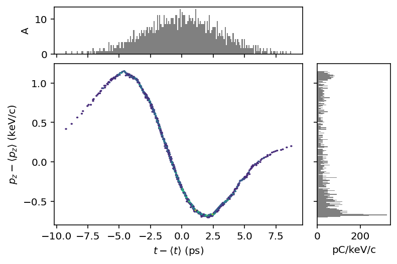
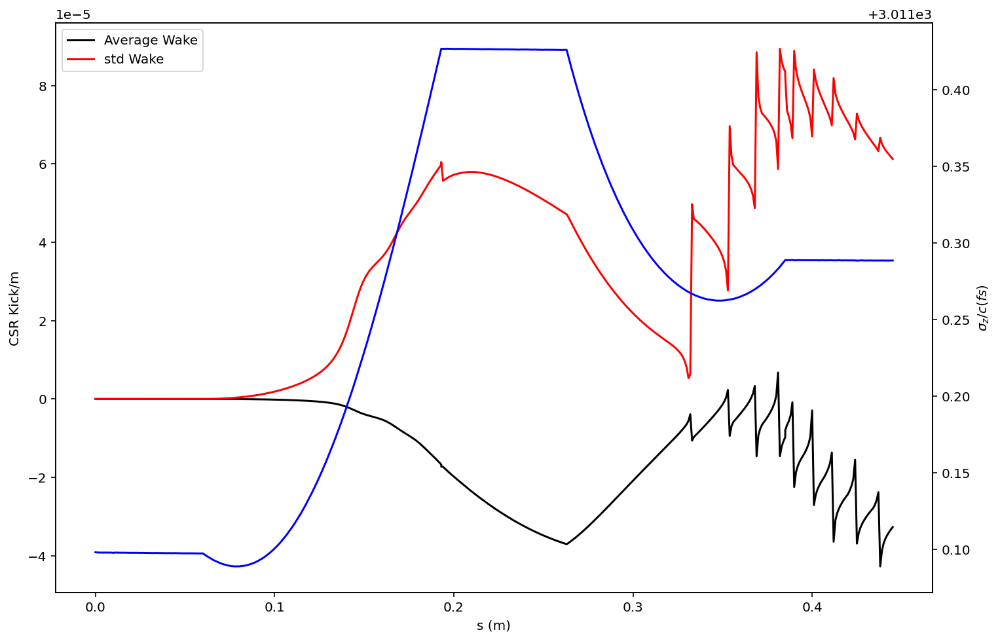

PyTao advanced usage¶
[1]:
# Useful for debugging
%load_ext autoreload
%autoreload 2
import matplotlib.pyplot as plt
import matplotlib
matplotlib.rcParams['figure.figsize'] = (12,8)
%config InlineBackend.figure_format = 'retina'
[2]:
from pytao import Tao, TaoModel, util, run_tao
from pytao.tao_ctypes.evaluate import evaluate_tao
import os
?TaoModel
Inititialize Tao¶
[3]:
# Point to local installation
BASE_DIR=os.environ['ACC_ROOT_DIR']
print('Bmad installation: ', BASE_DIR)
# Pick an example init
root = os.path.join(BASE_DIR, 'tao/examples/csr_beam_tracking/')
INPUT_FILE = root+'tao.init'
assert os.path.exists(INPUT_FILE), INPUT_FILE
Bmad installation: /Users/slepicka/sandbox/git-lume/bmad/bmad_dist_2020_1110
run_tao¶
[4]:
M=run_tao(input_file=INPUT_FILE, ploton=True)
M
[4]:
<pytao.tao_ctypes.core.TaoModel at 0x7f83a0255a50>
evaluate_tao¶
[5]:
?evaluate_tao
[6]:
res = evaluate_tao(settings={'csr_param:write_csr_wake':True,
'csr_param:ds_track_step':0.001},
input_file=root+'tao.init',
run_commands=['set global track_type=beam'],
expressions = ['lat::orbit.x[FF.PIP02A]', 'beam::norm_emit.x[end]'],
ploton=False,
archive_csr_wake=True,
beam_archive_path = '.')
res
[6]:
{'lat::orbit.x[FF.PIP02A]': 0.0,
'beam::norm_emit.x[end]': 9.9982316502565e-07,
'beam_archive': '/Users/slepicka/sandbox/git-lume/pytao-git/examples/bmad_beam_9aa4c282c0284ba3259a8ae2bd688be2.h5'}
[7]:
from pmd_beamphysics import ParticleGroup, particle_paths
from h5py import File
afile = res['beam_archive']
h5 = File(afile, 'r')
ppaths = particle_paths(h5)
ppaths
/Users/slepicka/mc/envs/lume/lib/python3.7/site-packages/pmd_beamphysics/plot.py:13: MatplotlibDeprecationWarning: You are modifying the state of a globally registered colormap. In future versions, you will not be able to modify a registered colormap in-place. To remove this warning, you can make a copy of the colormap first. cmap = copy.copy(mpl.cm.get_cmap("viridis"))
cmap.set_under('white')
[7]:
['/data/00001/particles/',
'/data/00002/particles/',
'/data/00003/particles/',
'/data/00004/particles/']
[8]:
list(h5)
[8]:
['csr_wake', 'data', 'expressions', 'input', 'settings']
[9]:
P = ParticleGroup(h5[ppaths[-1]])
P.plot('delta_t', 'delta_pz', bins=200)

[10]:
os.remove(afile)
csr_wake diagnostic file¶
[12]:
from pytao.misc.csr import read_csr_wake_data_h5, process_csr_wake_data
import numpy as np
[13]:
cdat = read_csr_wake_data_h5(h5, 'csr_wake')
[14]:
cdat.keys()
[14]:
dict_keys(['2:FF.PIP00B', '3:FF.BEN01', '4:FF.PIP01', '5:FF.BEN02', '6:FF.PIP02A'])
[15]:
# This is the actual data
dat = cdat['3:FF.BEN01']['data']
dat.shape
[15]:
(134, 40, 5)
[16]:
# This will process into a more useful form for data analysis
pdat = process_csr_wake_data(cdat)
?process_csr_wake_data
[17]:
from pytao.misc.csr_plot import plot_csr_wake, plot_csr_stats
from pytao.misc.csr import csr_wake_stats_at_step
[18]:
from ipywidgets import interact
def plot1(step=0):
plot_csr_wake(pdat, step=step)
nstep = len(pdat['z'])
interact(plot1, step=(0, nstep-1, 1) )
[18]:
<function __main__.plot1(step=0)>
[19]:
# Another convenience plot
plot_csr_stats(pdat)

[ ]: